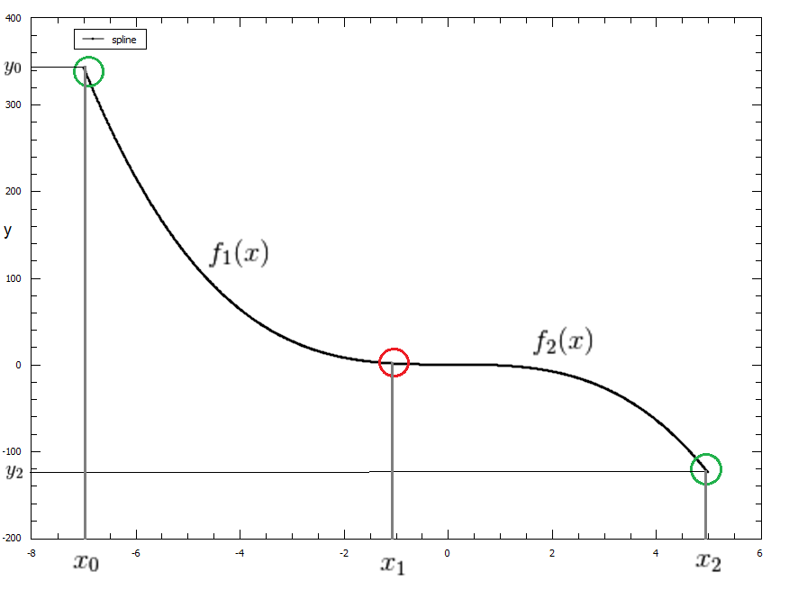
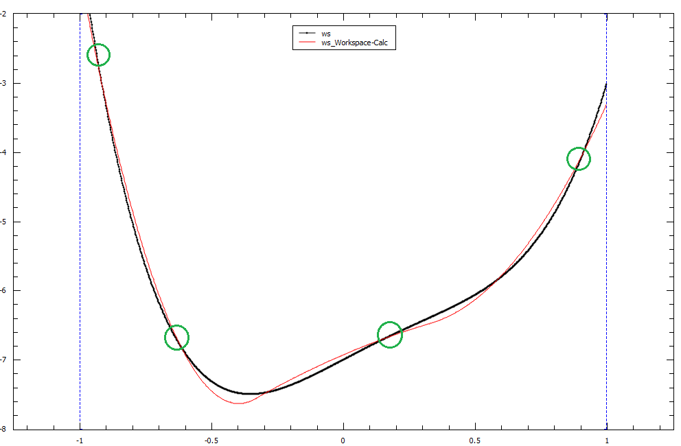

CubicSpline#
Description#
This function creates spline of order 3 using the set of points and interpolates the input between them taking into account the least-squares fit
First and second derivatives from the spline can be calculated by using the derivative1D function.
A CubicSpline is a polynomial function \(f(x)\) of order 3, defined between an interval \(a \leqslant x \leqslant b\). When using CubicSplines for interpolation or for fitting, we essentially chain BSplines of order 3 together so that each spline passes through the breakpoints in that interval.
A Cubic Spline is a specific case of BSpline that only uses polynomials of order 3 to define the spline functions.
Again, as with BSplines , there are certain conditions that must be fulfilled at each breakpoint such that the overall Spline is piecewise-smooth.
Example#
To demonstrate these conditions we can set up a basic CubicSpline with 3 breakpoints:
Our CubicSpline will be defined as the following:
Breakpoints : \(x_0, x_1, x_2\)
Our piecewise functions can be written as \(f_1(x) = c_0x^3 + c_1x^2 + c_2x + c_3\) and \(f_2(x) = c_4x^3 + c_5x^2 + c_6x + c_7\)
To make our CubicSpline piecewise-smooth we must ensure that these conditions are satisfied:
This point of smoothness is represented by the red circle in the graph below of our CubicSpline function \(C(x)\)
{kind=link}

CubicSplines and Fitting#
Fitting using a CubicSpline fit function is different to interpolating with a CubicSpline as it requires the number of breakpoints to be less than the number of data points. This allows the CubicSpline to fit as close as possible to the dataset using a least-squares fit instead of passing through all data points as with interpolation. The fitted curve will pass through the breakpoints however it may not pass through all of the data points in the set.
A example of fitting with a CubicSpline has been provided below, with the breakpoints highlighted in green. The original data plot is in black and our fitted CubicSpline with four breakpoints is in red.
{kind=link}

Attributes (non-fitting parameters)#
Name |
Type |
Default |
Description |
|---|---|---|---|
n |
Integer |
3 |
Number of breakpoints in Spline |
x0 |
Double |
- |
Position of first exterior breakpoint |
x1 |
Double |
- |
Position of the interior breakpoint |
x2 |
Double |
- |
Position of the last exterior breakpoint |
Properties (fitting parameters)#
Name |
Default |
Description |
|---|---|---|
y0 |
0.0 |
|
y1 |
0.0 |
|
y2 |
0.0 |
Even though the number of fitting parameters is set to 3 by default, this number is based off \(N + K - 2\). Where \(N\) is the number of breakpoints in the fit, \(K\) is the order of the spline (stays as 3 for the cubic spline case) and the \(-2\) accounts for our two exterior breakpoints \(x_0, x_n\). Increasing the number of breakpoints in your fit will increase the number of fitting parameters by the same amount.
Categories: FitFunctions | Background
Source#
C++ header: CubicSpline.h
C++ source: CubicSpline.cpp